Define a polygon label line segment
polygon_label_segment( x0, x1, y0, y1, sp, return_class = c("point", "matrix", "SpatialLines"), sp_buffer = 0, plot_debug = FALSE, relative = TRUE, verbose = FALSE, ... )
| x0 |
|
|---|---|
| x1 |
|
| y0 |
|
| y1 |
|
| sp |
|
| return_class |
|
| sp_buffer |
|
| relative |
|
| verbose |
|
| ... | additional arguments are passed to |
numeric matrix with one row, representing the
point of intersection with the polygon boundary,
see comments above for exceptions. When
return_class="matrix" then the matrix contains
two rows, where the second row contains the
point of intersection. When return_class="SpatialLines"
the object is sp::SpatialLines and represents the
line from the first point and the point of intersection.
Note that when there is no second point, the
sp::SpatialLines object will only have one point.
This function takes a line segment and polygon, and returns the point where a line segment starting at the source point touches the outer boundary of the polygon.
This function is intended to be used with polygon labels, where the original label position is inside the polygon, but is manually adjusted and may be placed somewhere outside the polygon. This function finds a suitable point to draw a line segment from the new label position to the polygon.
Some different situations are handled as follows,
use verbose=TRUE to see which situation occurred.
When the starting point is outside the polygon, and end point is inside the polygon, this function finds the point where this line segment first intersects the polygon boundary. This is the driving reason for this function.
When the starting point is outside the polygon, and end point also outside the polygon, this function finds the nearest the nearest point along the polygon boundary.
When the starting point is inside the polygon, this function returns NULL.
Note that this function currently does not adjust for the size or position of a label.
Other venndir label:
draw_gridtext_groups(),
polygon_label_fill(),
polygon_label_outside(),
sp_polylabelr()
x0 <- 0;x1 <- 1;y0 <- 0; y1 <- 1; sp <- sp_ellipses(xcenter=1, ycenter=1, xradius=0.5, yradius=1) sl2 <- polygon_label_segment(x0, x1, y0, y1, sp, return_class="SpatialLines", plot_debug=TRUE, main="segment drawn to boundary intersection");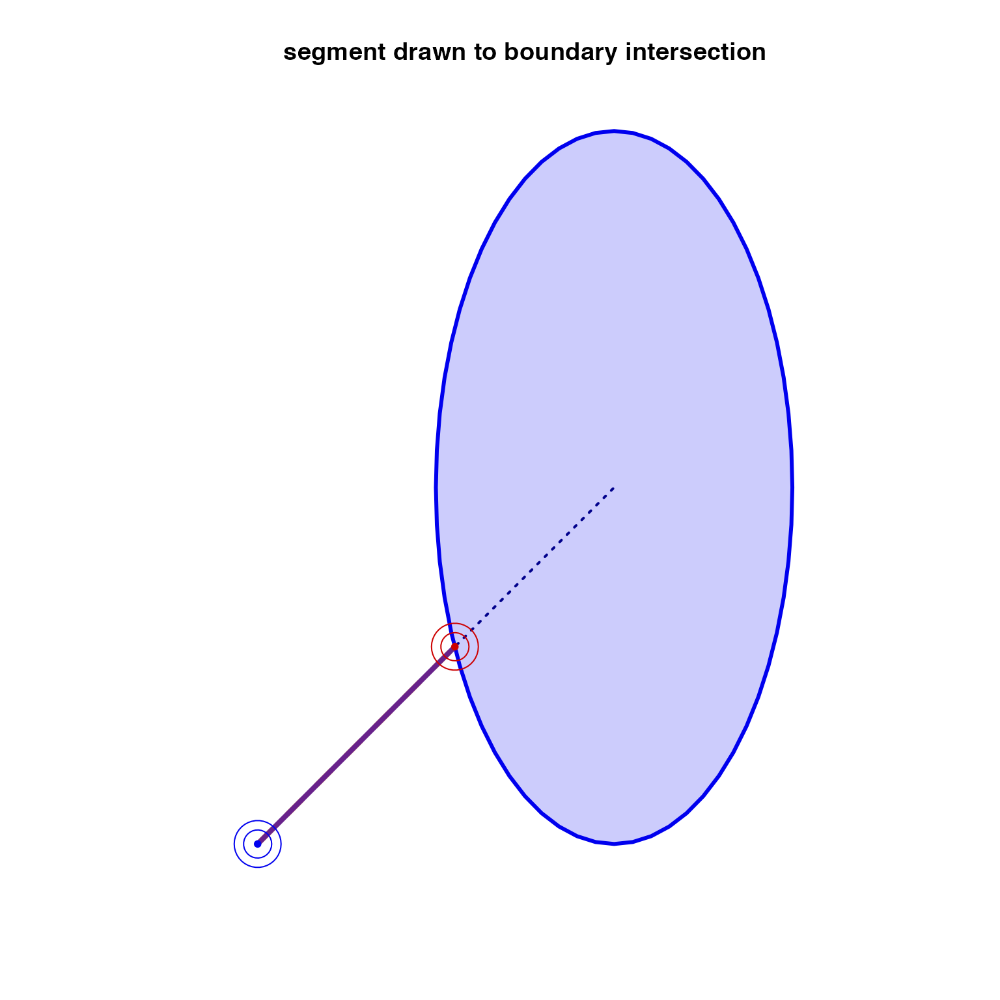# example of making a debug plot lxy <- cbind(c(x0, x1), c(y0, y1)); sp <- sp_ellipses(xcenter=1, ycenter=1, xradius=0.5, yradius=1); sl <- sp::SpatialLines(list(sp::Lines(list(sp::Line(lxy)), ID="a"))); sp::plot(sp, col="#00007777", border="blue3", lwd=2, xlim=c(0, 2), ylim=c(0, 2), asp=1, main="segment drawn to boundary intersection");sp::plot(sl, lty="dotted", lwd=2, col="blue2", add=TRUE);sp::plot(sl2, col="red3", lwd=4, add=TRUE)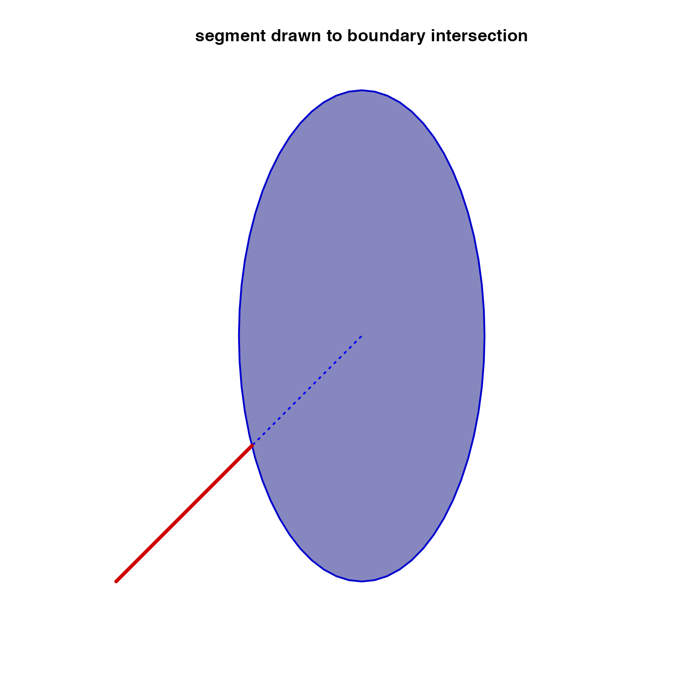# example where the line intersects multiple boundaries x0 <- 0;x1 <- 2;y0 <- 0; y1 <- 2; sl2 <- polygon_label_segment(x0, x1, y0, y1, sp, return_class="SpatialLines", plot_debug=TRUE, main="segment drawn to first boundary intersection");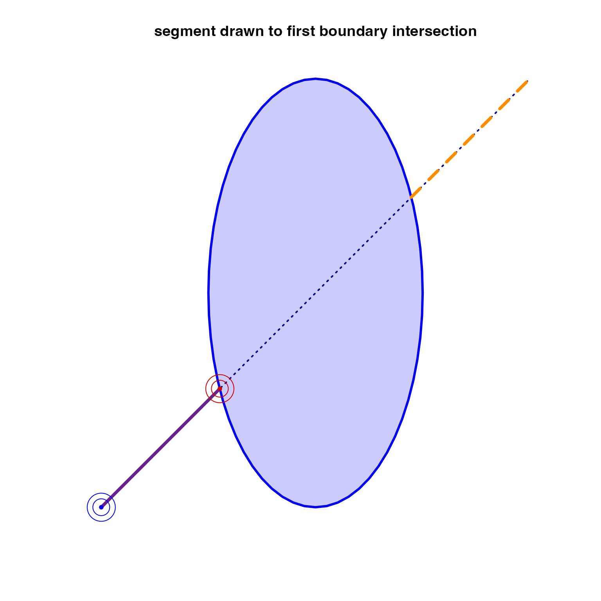# example where starting line does not intersect x0 <- 0;x1 <- 1;y0 <- 0; y1 <- 1; sp <- sp_ellipses(xcenter=2, ycenter=1, xradius=0.5, yradius=1); sl2 <- polygon_label_segment(x0, x1, y0, y1, sp, return_class="SpatialLines", plot_debug=TRUE, main="segment drawn to nearest boundary point");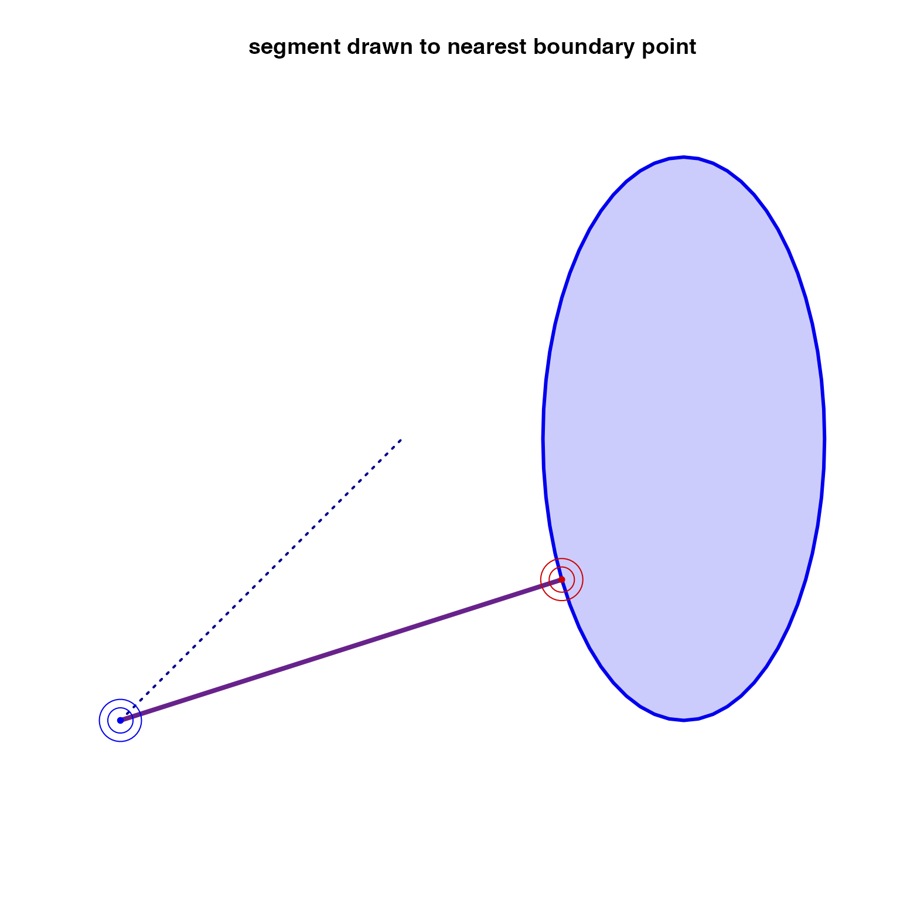lxy <- cbind(c(x0, x1), c(y0, y1)); sp <- sp_ellipses(xcenter=2, ycenter=1, xradius=0.5, yradius=1); sl <- sp::SpatialLines(list(sp::Lines(list(sp::Line(lxy)), ID="a"))); sl2 <- polygon_label_segment(x0, x1, y0, y1, sp, "SpatialLines"); sp::plot(sl, xlim=c(0, 3), ylim=c(0, 2), asp=1, lty="dotted", main="segment drawn to nearest boundary point");sp::plot(sp, col="#00007777", border="navy", lwd=2, add=TRUE)sp::plot(sl2, col="red", lwd=4, add=TRUE)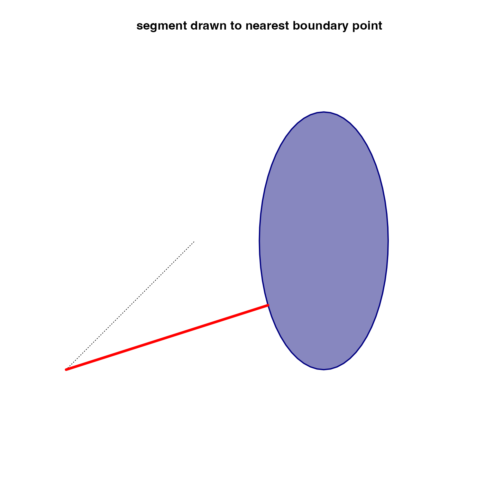# example showing line fully inside the polygon x0 <- 0;x1 <- 2;y0 <- 0; y1 <- 2; sp <- sp_ellipses(xcenter=1, ycenter=1, xradius=1.5, yradius=2.2); sl2 <- polygon_label_segment(x0, x1, y0, y1, sp, return_class="SpatialLines", plot_debug=TRUE, main="segment contained inside returns one point");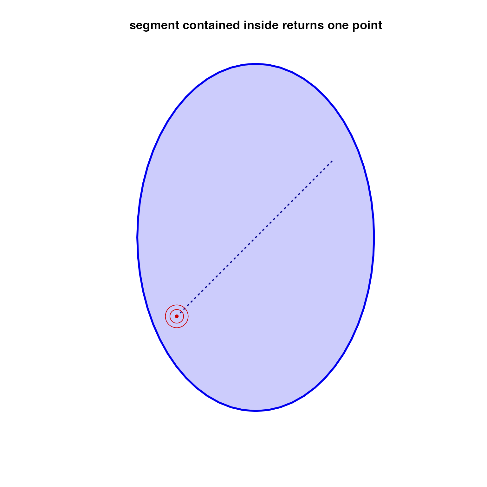# example showing polygon with a hole inside sp <- sp_ellipses(xcenter=1, ycenter=1, xradius=0.5, yradius=1); sp_hole <- sp_ellipses(xcenter=1, ycenter=1, xradius=0.2, yradius=0.5); sp_donut <- rgeos::gDifference(sp, sp_hole); sl2 <- polygon_label_segment(x0, x1, y0, y1, sp_donut, return_class="SpatialLines", plot_debug=TRUE, main="segment drawn to first outer boundary intersection");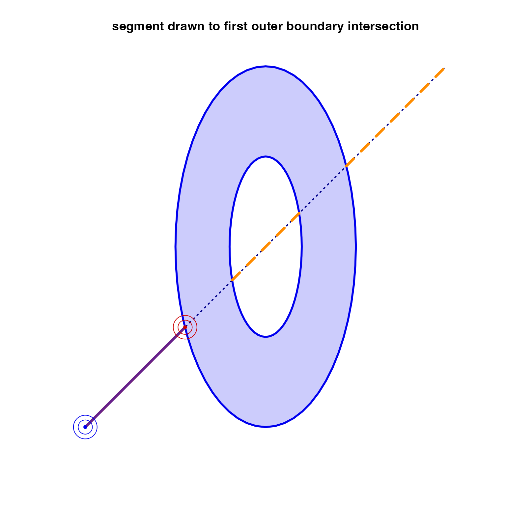# example with line inside the polygon hole x0 <- 0.9;x1 <- 1.1;y0 <- 0.9; y1 <- 1.1; sp <- sp_ellipses(xcenter=1, ycenter=1, xradius=0.5, yradius=1); sp_hole <- sp_ellipses(xcenter=1, ycenter=1, xradius=0.2, yradius=0.5); sp_donut <- rgeos::gDifference(sp, sp_hole); sl2 <- polygon_label_segment(x0, x1, y0, y1, sp_donut, return_class="SpatialLines", plot_debug=TRUE, main="segment drawn to nearest boundary");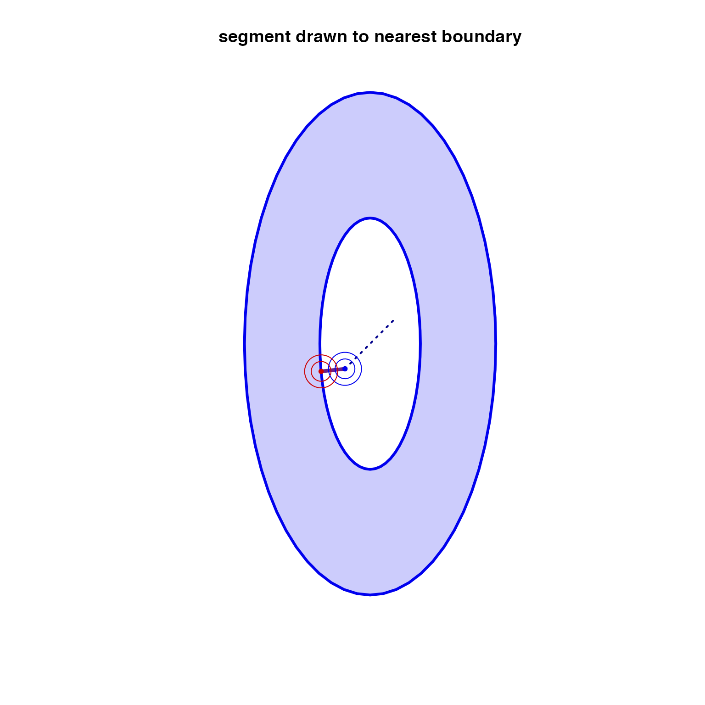# line crosses inside the polygon hole x0 <- 1;x1 <- 1.4;y0 <- 1; y1 <- 1.4; sp <- sp_ellipses(xcenter=1, ycenter=1, xradius=0.5, yradius=1); sp_hole <- sp_ellipses(xcenter=1, ycenter=1, xradius=0.2, yradius=0.5); sp_donut <- rgeos::gDifference(sp, sp_hole); sl2 <- polygon_label_segment(x0, x1, y0, y1, sp_donut, return_class="SpatialLines", plot_debug=TRUE, main="segment drawn to boundary intersection");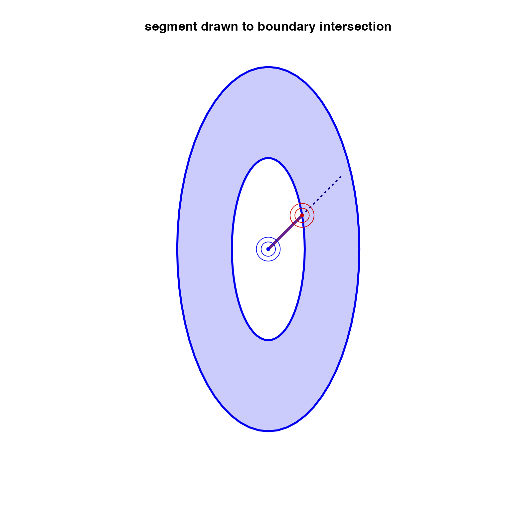x0 <- 0.6;x1 <- 1;y0 <- 0.6; y1 <- 1; sp <- sp_ellipses(xcenter=1, ycenter=1, xradius=0.5, yradius=1); sp_hole <- sp_ellipses(xcenter=1, ycenter=1, xradius=0.2, yradius=0.5); sp_donut <- rgeos::gDifference(sp, sp_hole); sl2 <- polygon_label_segment(x0, x1, y0, y1, sp_donut, return_class="SpatialLines", plot_debug=TRUE, main="first point inside the polygon, returns one point");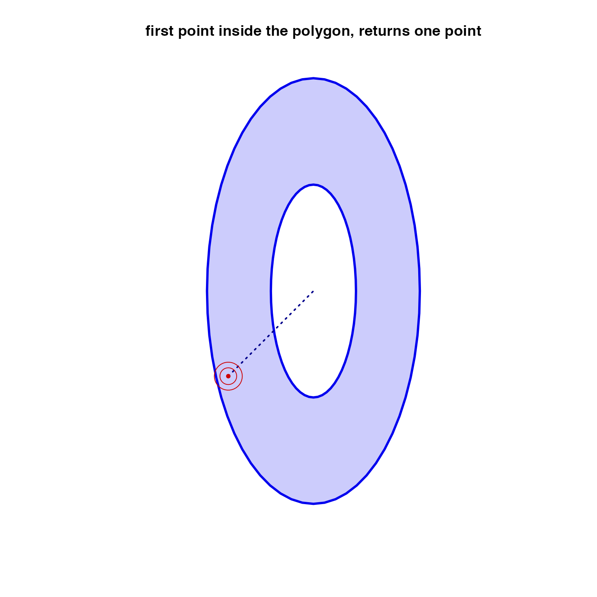# example showing multiple input points x0 <- c(0.6, 1.1); x1 <- c(1, 1.4); y0 <- c(0.6, 1.1); y1 <- c(1, 1.4); sl2 <- polygon_label_segment(x0, x1, y0, y1, sp=sp_donut, return_class="point", verbose=TRUE, plot_debug=TRUE);#> ## (14:03:46) 10Mar2021: polygon_label_segment(): j:1, spi[j]:1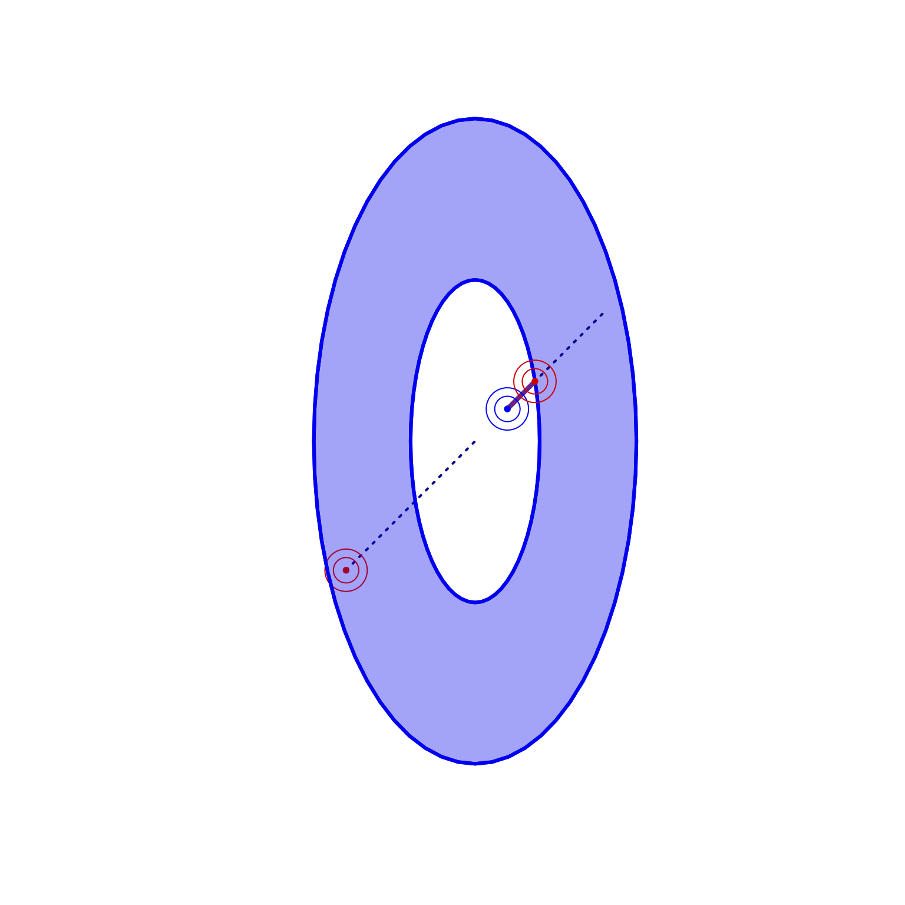#> ## (14:03:46) 10Mar2021: polygon_label_segment(): The first point is inside the polygon. #> ## (14:03:46) 10Mar2021: polygon_label_segment(): j:2, spi[j]:1 #> ## (14:03:46) 10Mar2021: polygon_label_segment(): The first point is outside the polygon. #> ## (14:03:46) 10Mar2021: polygon_label_segment(): Using first outer line segment 1# example showing sp_buffer sl2 <- polygon_label_segment(x0, x1, y0, y1, sp=sp_donut, sp_buffer=-0.1, return_class="point", verbose=TRUE, plot_debug=TRUE);#> ## (14:03:46) 10Mar2021: polygon_label_segment(): j:1, spi[j]:1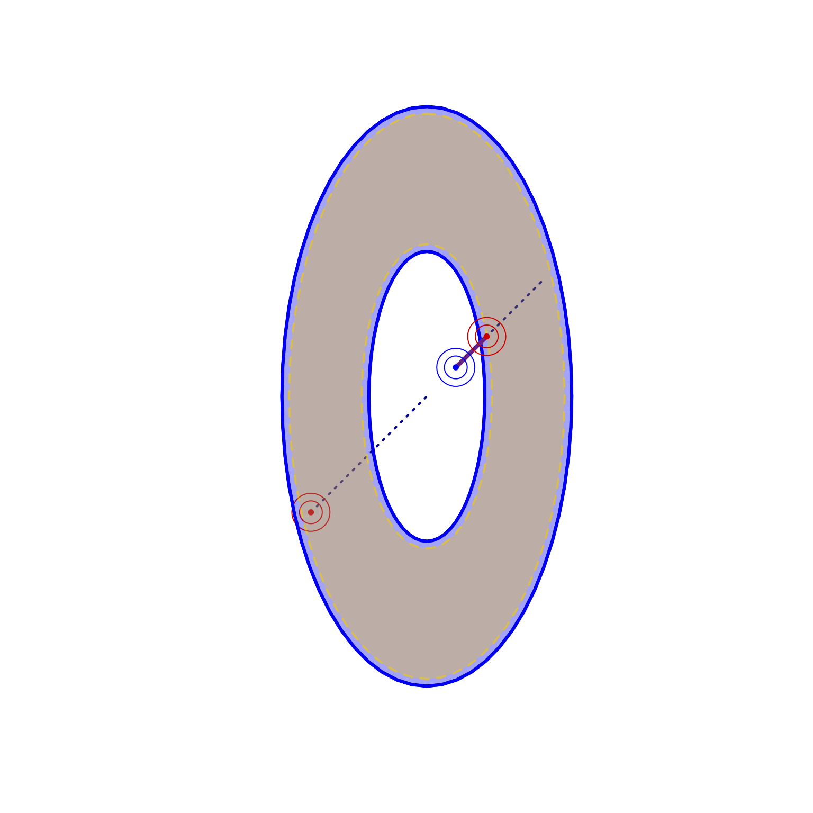#> ## (14:03:46) 10Mar2021: polygon_label_segment(): Applied sp_buffer:-0.1 #> ## (14:03:46) 10Mar2021: polygon_label_segment(): The first point is inside the polygon. #> ## (14:03:46) 10Mar2021: polygon_label_segment(): j:2, spi[j]:1 #> ## (14:03:46) 10Mar2021: polygon_label_segment(): Applied sp_buffer:-0.1 #> ## (14:03:46) 10Mar2021: polygon_label_segment(): The first point is outside the polygon. #> ## (14:03:46) 10Mar2021: polygon_label_segment(): Using first outer line segment 1